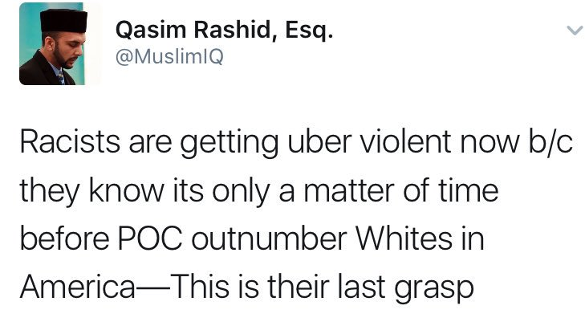

Words by @FrameGames
Here's a model for understanding "The Media" that has been very useful to me. I don't think of the media as NEWS, but as LEADS.
When you think of the media as "news" you concede they are actually reporting a news event. DON'T CONCEDE THE FRAME OF THEIR LEGITIMACY.
MSM's status as *authoritative historian of public record* is critical to how they control the narrative internalized by public opinion.
This is why MSM deployed the frame "Fake News" in November to re-establish its monopoly. If all else is fake, THEY ALONE WRITE HISTORY.
I wrote in April that our finest victory in 2017 was appropriating the
term Fake News. When that happened, MSM BEGGED to stop using it.
See, *authenticity* is a key lever in left-wing power structures, as it confers an exclusive claim to authority, which legitimizes power.
It's a classic Overton War strategy, which is fought not over the
truth, but over who gets the right to determine the truth.
If you win the 2nd fight, you don't even need to fight the 1st. This leads to authenticity jockeying, a pronounced trait in liberals.
Yuri Bezmenov's theory of subversion has 4 stages:
(1) Demoralization
(2) Destabilization
(3) Crisis
(4) Normalization
We are now in (4)
Explanation:
https://youtu.be/xFqShpJm_zc?t=767
https://youtu.be/SZnkULuWFDg?t=2415
Because Trumpism won in the crisis stage, institutional SJW & globalist forces must focus all their energy on resisting NORMALIZATION.
Yuri Bezmenov describes how losers at the crisis stage can only stop normalization through military or authoritarian means. Look around.


What you have to understand is that THE RULES OF AN ANTI-NORMALIZATION CAMPAIGN ARE VERY DIFFERENT THAN THE RULES OF A FREE SOCIETY.
Free speech massively helped SJWs rise to institutional dominance by ensuring them a platform even though they were an extremist fringe.

But in an ANTI-NORMALIZATION context, free speech is disastrous to them, because WIN OR LOSE the debate, the mere act of debate NORMALIZES.
NORMALIZATION of Trumpism (not even dominance, simple normalcy) is SO DISASTROUS for them that paramilitary violence gets encouraged.

Why is NORMALIZATION so disastrous to them? I have news for you friends, it is worse than 99.99% of you seem to have calculated.
Strap in because you are about to go for the ride of your life. First, let's meet a friend to keep us company. His name is Overton.
The Overton window is the "window of discourse." Every idea in the world sits at a point along this range of permitted thought.
In the US, a radical SJW political dogma began in the 1923 as the Frankfurt School achieved broad institutional dominance in 1964-65.
Institutionalized SJW political power then grew into a vast, intertwined business industry.
This #DiversityIndustry 100x'd under the 1965 Immigration Act, which rolled into motion the biggest boulder on earth:
Demographics.
The root of #DiversityIndustry political power is a rock solid ethnic voting alliance among non-Whites & a split among Whites.
See, that's the funny thing about representative democracy in a multicultural society: identity politics are nuclear weapons. THEY WORK.


So in 2017, this coalition of the fringes is all but frothing at the mouth awaiting their permanent hegemony.


With shock being processed by Whites whose parents grew up in a 85% White nation, MAINSTREAM MEDIA now dances OPENLY on their graves.
Example of the heinous celebration:
https://www.youtube.com/watch?v=_TMrJDHu_TU
By all indications, as with the history of Zimbabwe/South Africa/Detroit, when demographics flip, revenge will be the order of the day.
The mere use of a White face to represent the US (let alone a biz brochure) is now RADICAL. The ACLU just ran into this Overton reality.

Predictably, like any mainstream institution that must do business with other institutions, ACLU retracted the White baby & apologized
The ACLU tweet exposes key conflicts in multi-ethnic societies: whose baby is the face of the nation? And for Whites, what now?
We now turn to the main event: why is this happening and what can you do about it.
I've made this simple series of charts to show you.
This is a map of right-wing ideologies in the Current Year, with their theoretical position along the Overton window in blue below.
I say "theoretical" bc a funny thing happens on the way to White identity: you get called supremacist, even if you're just identitarian.
Many have had similar conversations. You know your views are actually quite uncontroversial. It's MLK: identity for all, or none.
This is the "ZONE OF UNTHINGING." What SJWs will do is say "there's no such thing" as White identity bc "it's the same thing" as Nazi.
This is a tactic to remove the thing - a set of ideas that may be quite sensible - from public consideration bc it's not even a thing.
If they win the fight over whether it's a thing, they don't need to fight over whether the thing is right or wrong. It's simply removed.
The result is THE ENTIRE WINDOW SHIFTS to fill the void. There are no words to express anything identitarian without being supremacist.
Because UNTHINGING makes THE WHOLE WINDOW SHIFT, POC identity goes from radical to sensible; White identity from radical to unthinkable.
And so, by conceding the frame of White identity, there is a veritable book-burning of perfectly egalitarian and sensible ideas.
Once you recognize this SJW tactic of attacking ideas by UNTHINGING them rather than scrutinizing their merit, you'll see it everywhere.
Given that White identity has been UNTHINGED for so long, the task now is to subvert the Mean Girl & make Fetch happen, so to speak.
That begins by FIGHTING AN OVERTON WAR, not a strictly principled or honorable one. It is dirty business. It's a frame game.
Which brings us full circle. I don't legitimize MSM with the title of "news." What little info they give, I treat as a LEAD. That's all.